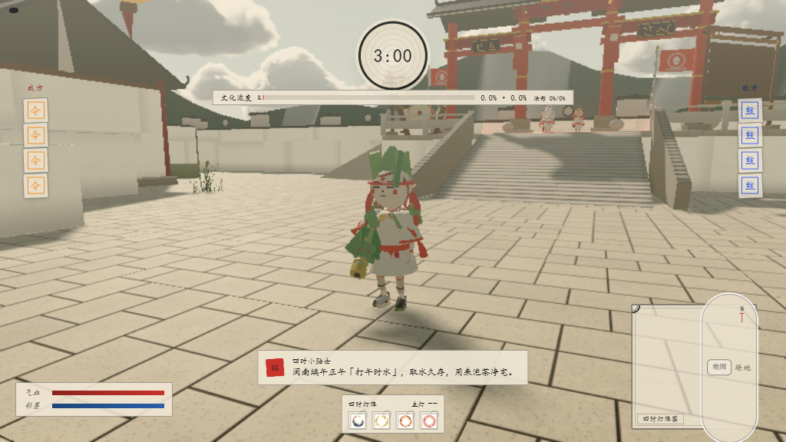
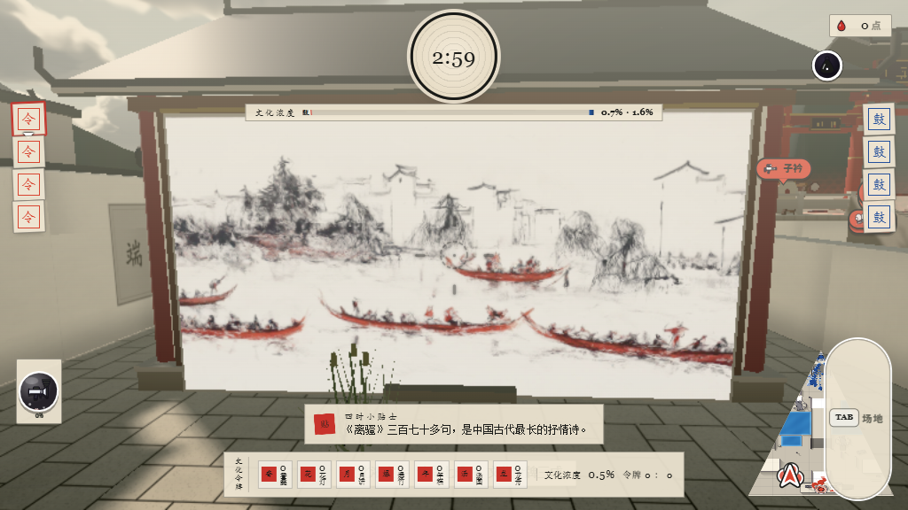
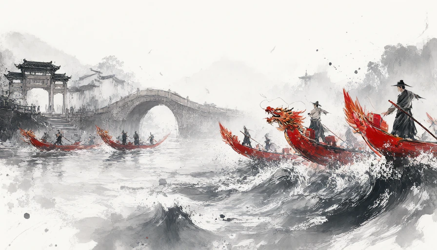
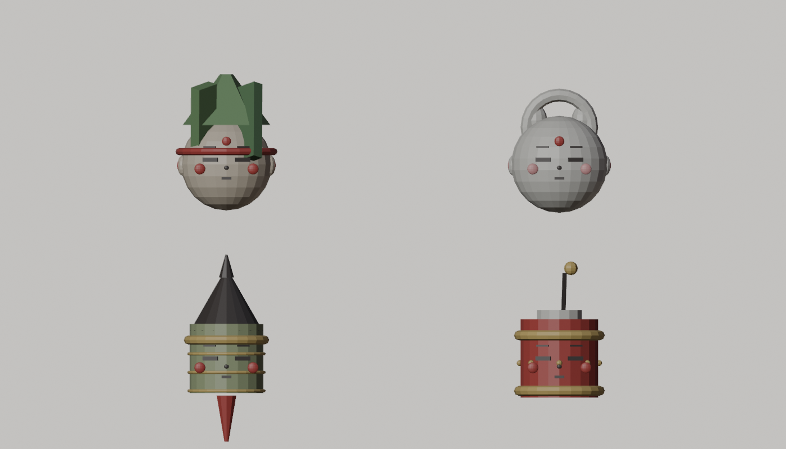
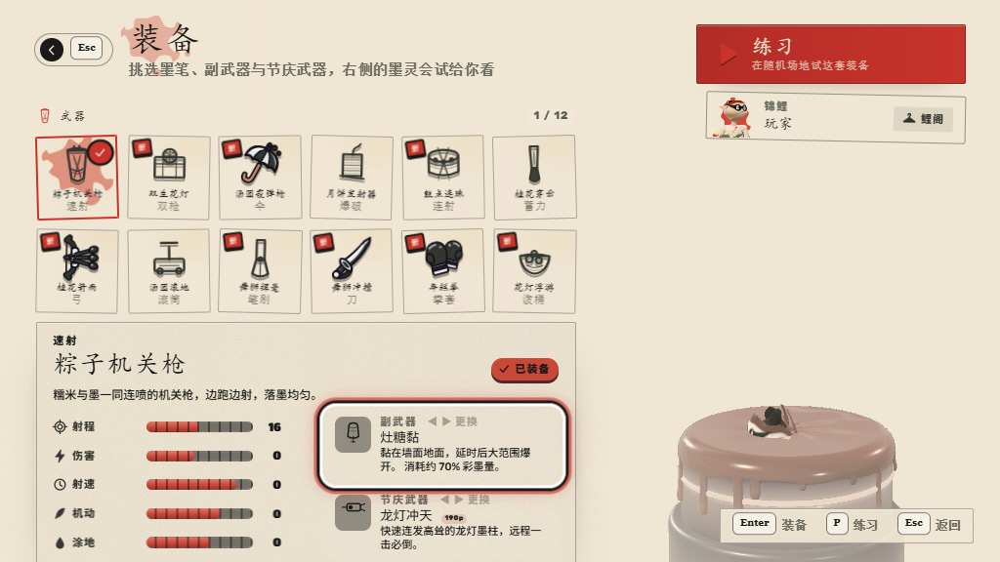
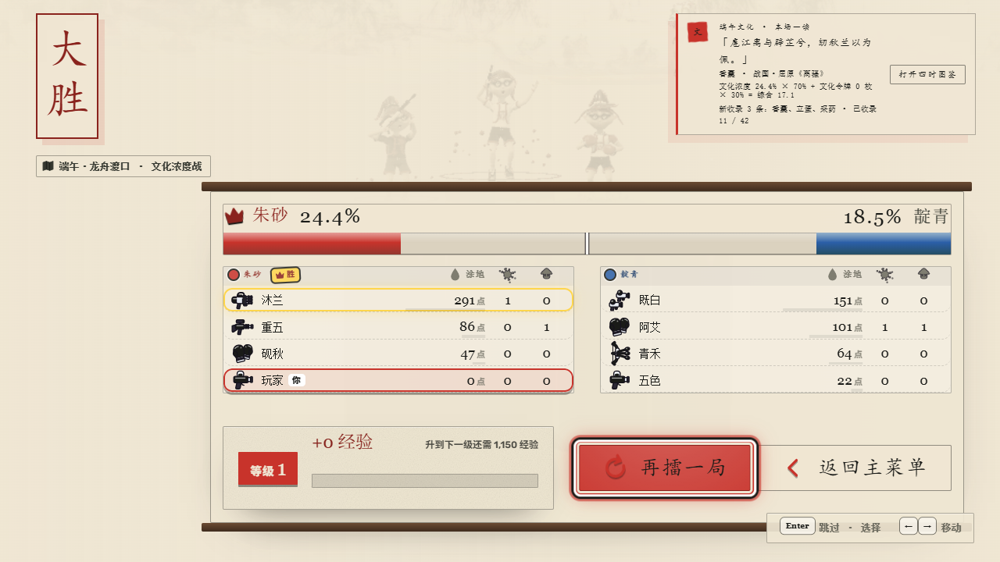

中国传统节庆 · 4v4 彩墨竞技
一鼓
定四时
Paint. Hold. Sound the drum.
四座节令灯台散落场上。用彩墨涂地夺灯，守住灯阵， 鼓声每 30 秒指定新的主灯。180 秒内，文化浓度更高的一方胜出。
- 4v4
- 墨灵团队竞技
- 04
- 节令灯台
- 180
- 秒一局

实机画面 03:00
端阳 · 龙舟渡口
中秋 · 月宴
元宵 · 灯会
春节 · 庙会
端阳 · 龙舟渡口
中秋 · 月宴
元宵 · 灯会
春节 · 庙会
What is Drum Tide
把节庆记忆，
变成一场灯阵争夺。
《鼓令》以端午、中秋、元宵、春节为舞台。 四张地图不是背景板，它们各自拥有一座节令灯台。 你不只是占点，更是在鼓声、彩墨和队友走位之间， 守住一整套属于四时的文化浓度。

How to play
三步，
把灯台变成你的节令。
-
01
涂彩夺灯
用本方彩墨覆盖灯台周边 65%，再与队友站入 2 秒。抢敌方灯台前，先中和原来的颜色。
-
02
听鼓转场
每 30 秒，鼓声指定一座主灯。主灯持续 20 秒，占领进度与文化产出翻倍，全场必须转移阵地。
-
03
守住浓度
持有 1 到 4 座灯台时，每秒产出 0.6 到 4.2 点文化浓度。比赛结束时，浓度高者获胜。
4v4玩家与三名墨灵队友
180s一局固定时长
×2主灯占领与产出
Four seasonal battlegrounds
四时地图，
四种夺灯节奏。
从水路、庙会到月中庭院，每张地图用建筑、光线与灯台位置改变战斗路线。

端阳 · 龙舟渡口水路决定夺灯路线
桥拱与河岸把主战场挤成狭长通道。灯台靠水，抢灯后更容易被从侧翼反打。
Ink spirits and festival arms
墨灵上阵，
节令为器。
玩家与三名墨灵组成队伍，对抗四名敌方墨灵。 主武器、副武器与节庆武器各自改变涂地、控场和远程压制。
- 12
- 主武器
- 15
- 副武器
- 19
- 节庆武器




Windows x64 / Version 1.0.3